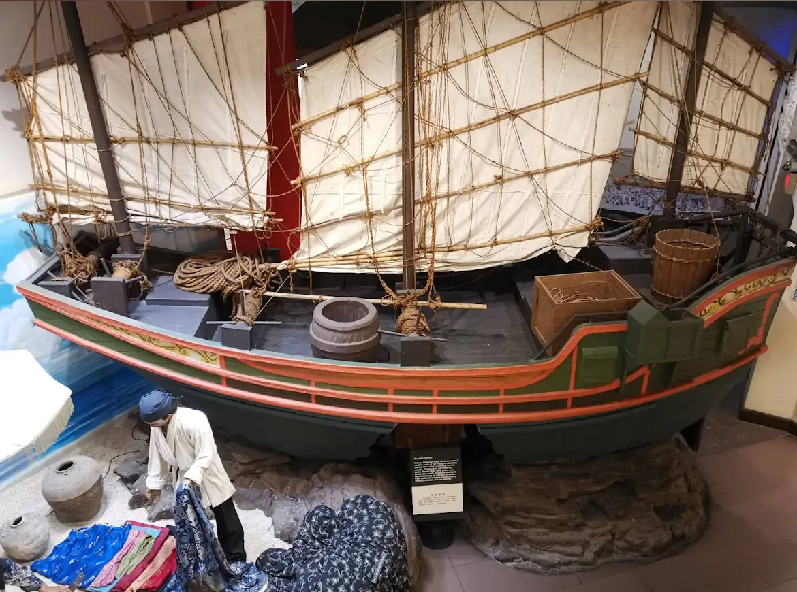
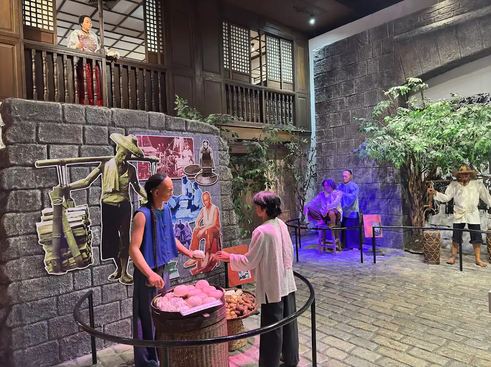
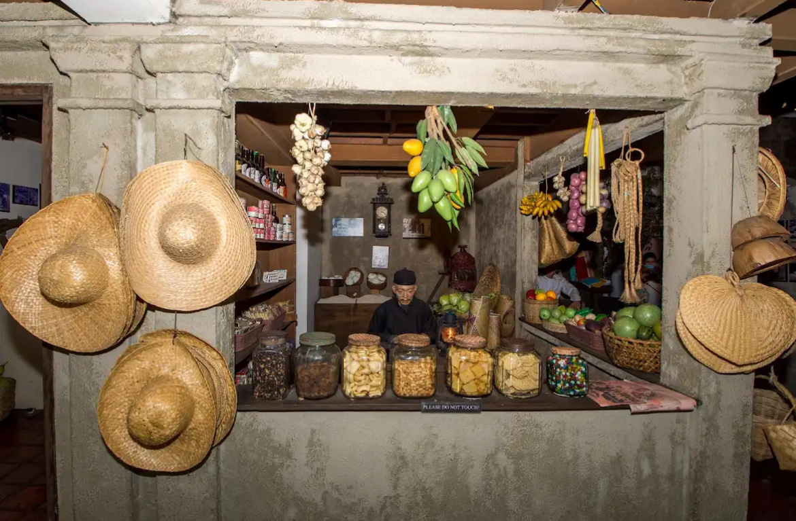
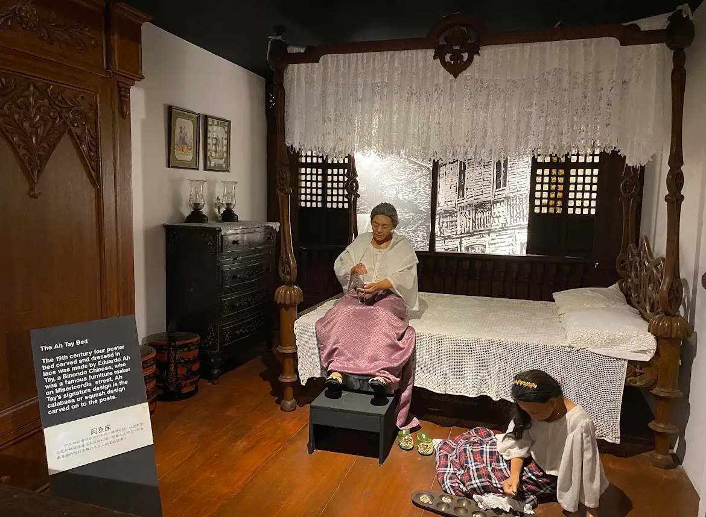
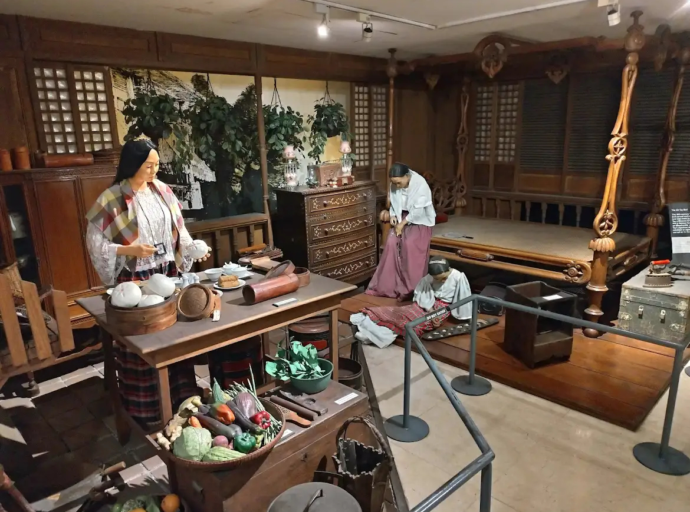
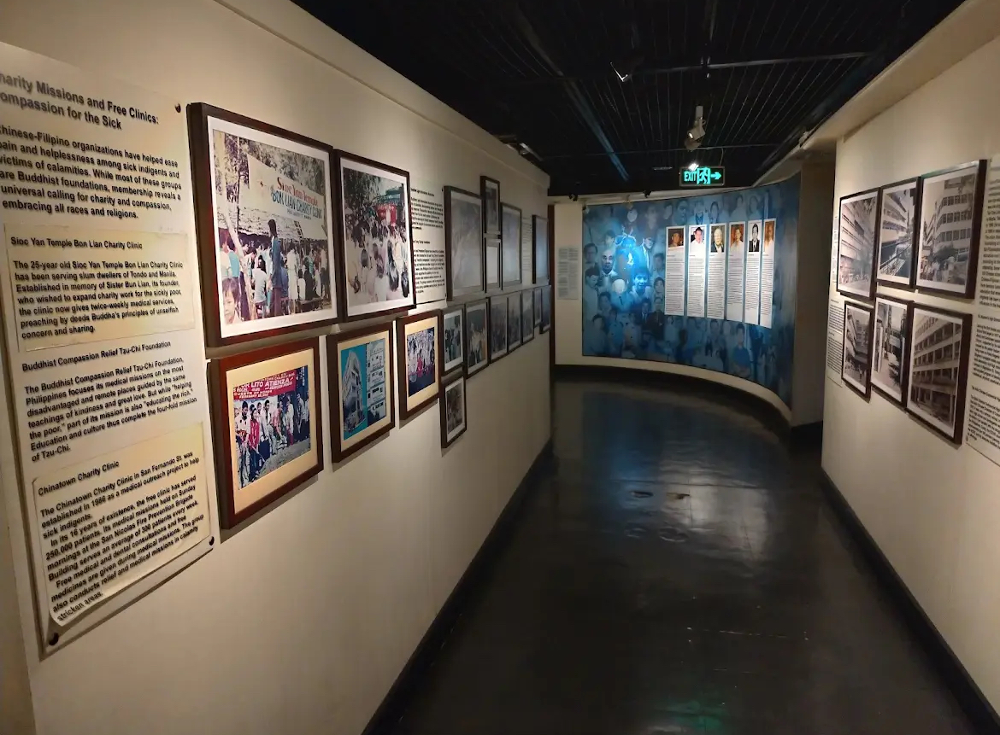
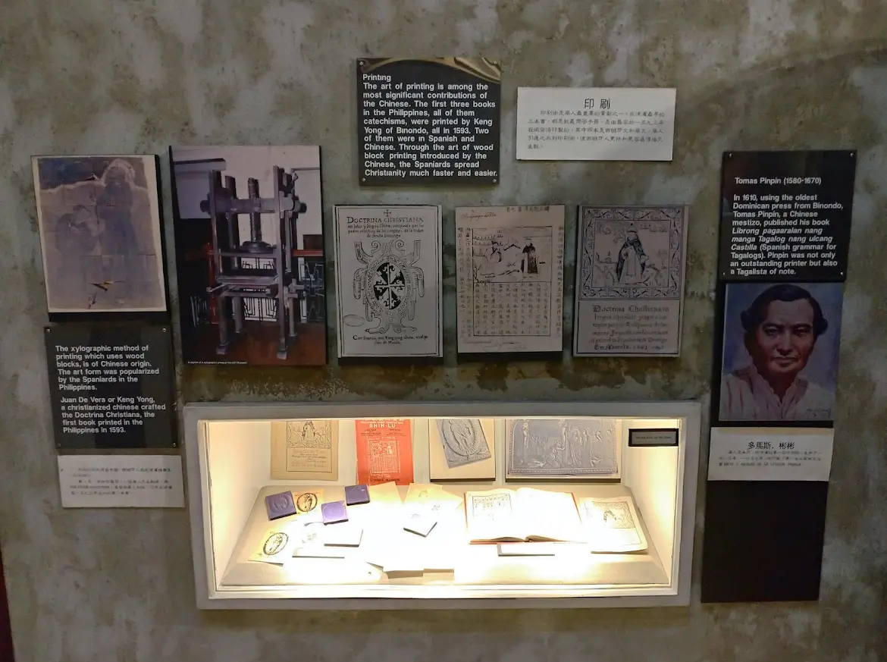
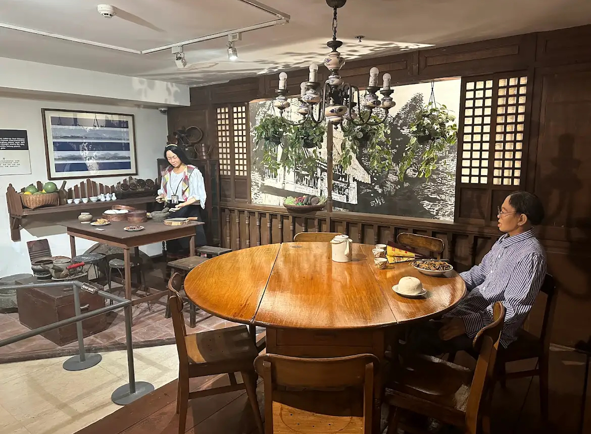

Overview
Bahay Tsinoy, formally the Kaisa Heritage Center, is a cultural museum in Intramuros that chronicles the rich and intertwined histories of Chinese and Filipino communities. Located near the historic walls of the Walled City, this museum is a visual narrative of centuries of cultural exchange, migration, and contributions of the Chinese-Filipino or “Tsinoy†people.
The museum features life-sized dioramas, rare photographs, antique ceramics, trade documents, and displays highlighting how Chinese immigrants adapted and shaped Philippine society across generations.
Photo Gallery








🮠Museum Highlights
- Life-sized Dioramas: Realistic exhibits portray the arrival of Chinese immigrants and daily life in colonial Manila.
- Historical Artifacts: Rare porcelain, coins, and trade relics document centuries of Chinese trade and settlement.
- Tsinoy Identity: Explore how integration shaped Filipino culture, language, and society through interactive displays.
- Community Contributions: Learn about Chinese-Filipino figures who influenced education, business, and politics.
- Educational Hub: Regular lectures, exhibits, and publications make it a center for heritage and historical research.
- Accessible Location: Centrally located within walking distance from other Intramuros attractions.
Find It Here
User Reviews
Loading average rating...